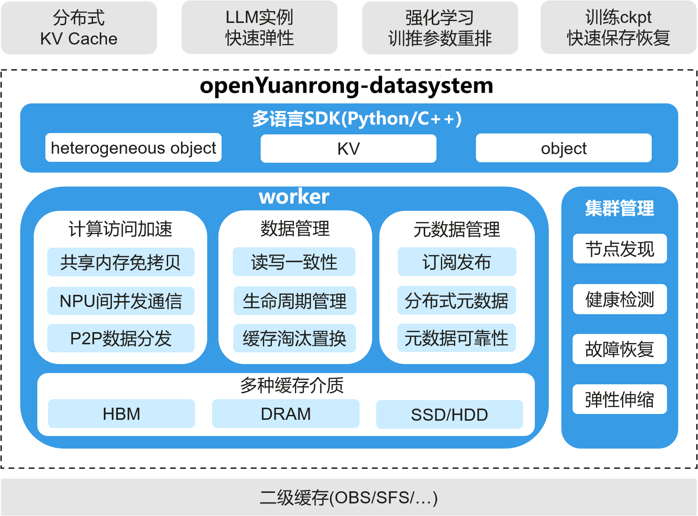
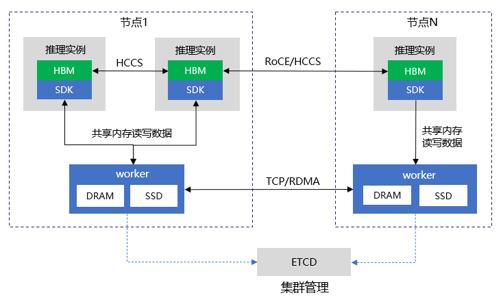

概述#
数据系统（openYuanrong datasystem） 是 openYuanrong 的核心概念抽象，是一个分布式缓存系统，利用计算集群的 HBM/DRAM/SSD 资源构建近计算多级缓存，提升模型训练及推理、大数据、微服务等场景数据访问性能。
openYuanrong datasystem 的主要特性包括：
高性能分布式多级缓存：基于 DRAM/SSD 构建分布式多级缓存，应用实例通过共享内存免拷贝读写 DRAM 数据，并提供高性能 H2D(host to device)/D2H(device to host) 接口，实现 HBM 与 DRAM 之间快速 swap。
NPU 间高效数据传输：将 NPU 的 HBM 抽象为异构对象，自动协调 NPU 间 HCCL 收发顺序，实现简单易用的卡间数据异步并发传输。并支持P2P传输负载均衡策略，充分利用卡间链路带宽。
灵活的生命周期管理：支持设置 TTL、LRU 缓存淘汰以及 delete 接口等多种生命周期管理策略，数据生命周期既可由数据系统管理，也可交由上层应用管理，提供更高的灵活性。
热点数据多副本：数据跨节点读取时自动在本地保存副本，支撑热点数据高效访问。本地副本使用 LRU 策略自动淘汰。
多种数据可靠性策略：支持 write_through、write_back 及 none 多种持久化策略，满足不同场景的数据可靠性需求。
数据一致性：支持 Causal 及 PRAM 两种数据一致性模型，用户可按需选择，实现性能和数据一致性的平衡。
数据发布订阅：支持数据订阅发布，解耦数据的生产者（发布者）和消费者（订阅者），实现数据的异步传输与共享。
高可靠高可用：支持分布式元数据管理，实现系统水平线性扩展。支持元数据可靠性，支持动态资源伸缩自动迁移数据，实现系统高可用。
openYuanrong datasystem 适用场景#
LLM 长序列推理 KVCache：基于异构对象提供分布式多级缓存 (HBM/DRAM/SSD) 和高吞吐 D2D/H2D/D2H 访问能力，构建分布式 KV Cache，实现 Prefill 阶段的 KVCache 缓存以及 Prefill/Decode 实例间 KV Cache 快速传递，提升推理吞吐。
模型推理实例 M->N 快速弹性：利用异构对象的卡间直通及 P2P 数据分发能力实现模型参数快速复制。
强化学习模型参数重排：利用异构对象的卡间直通传输能力，快速将模型参数从训练侧同步到推理侧。
训练场景 CheckPoint 快速保存及加载：基于 KV 接口快速写 Checkpoint，并支持将数据持久化到二级缓存保证数据可靠性。Checkpoint恢复时各节点将 Checkpoint 分片快速加载到异构对象中，利用异构对象的卡间直通传输及 P2P 数据分发能力，快速将 Checkpoint 传递到各节点 HBM。
微服务状态数据快速读写：基于 KV 接口实现内存级读写微服务状态数据，并支持将数据持久化到二级缓存保证数据可靠性。
openYuanrong datasystem 架构#
{kind=link}

openYuanrong datasystem 逻辑架构#
openYuanrong datasystem 由三个部分组成：
多语言SDK：提供 Python/C++ 语言接口，封装 heterogeneous object 、KV 以及 object 接口，支撑业务实现数据快速读写。提供两种类型接口：
heterogeneous object：基于 NPU 卡的 HBM 内存抽象异构对象接口，实现昇腾 NPU 卡间数据高速直通传输。同时提供 H2D/D2H 高速迁移接口，实现数据快速在 DRAM/HBM 之间传输。
KV：基于共享内存实现免拷贝的 KV 接口，实现高性能数据缓存，支持通过对接外部组件提供数据可靠性语义。
object：基于共享内存实现近计算的本地对象缓存，实现函数间高效数据流转，支撑Distributed Futures编程模型。
worker：openYuanrong datasystem 的核心组件，用于分配管理 DRAM/SSD 资源以及元数据，提供分布式多级缓存能力。
集群管理：依赖 ETCD，实现节点发现/健康检测，支持故障恢复及在线扩缩容。
{kind=link}

openYuanrong datasystem 部署架构#
openYuanrong datasystem 的部署视图如上图所示：
需部署 ETCD 用于集群管理。
每个节点需部署 worker 进程并注册到 ETCD。
SDK 集成到用户进程中并与同节点的 worker 通信。
各组件间的数据传输协议如下：
SDK 与 worker 之间通过共享内存读写数据。
worker 和 worker 之间通过 TCP/RDMA 传输数据（当前版本仅支持 TCP，RDMA/UB 即将支持）。
异构对象 HBM 之间通过 HCCS/RoCE 卡间直通传输数据。